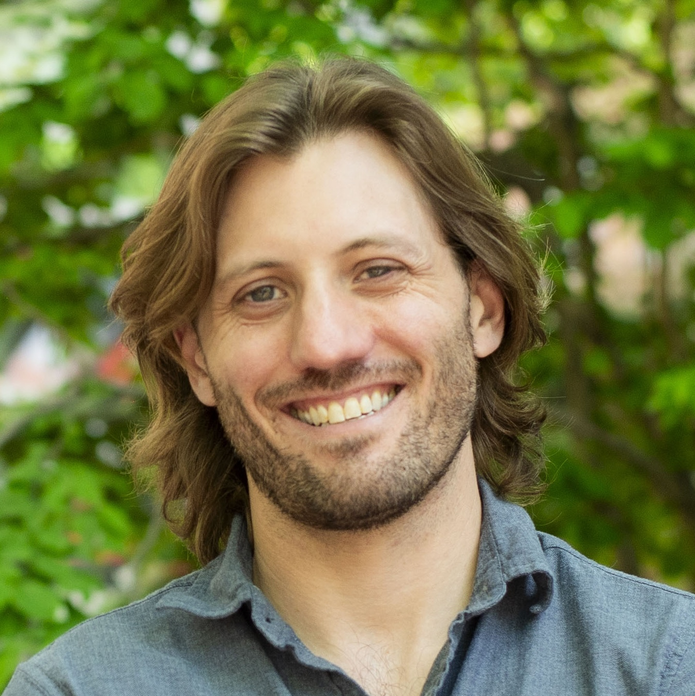
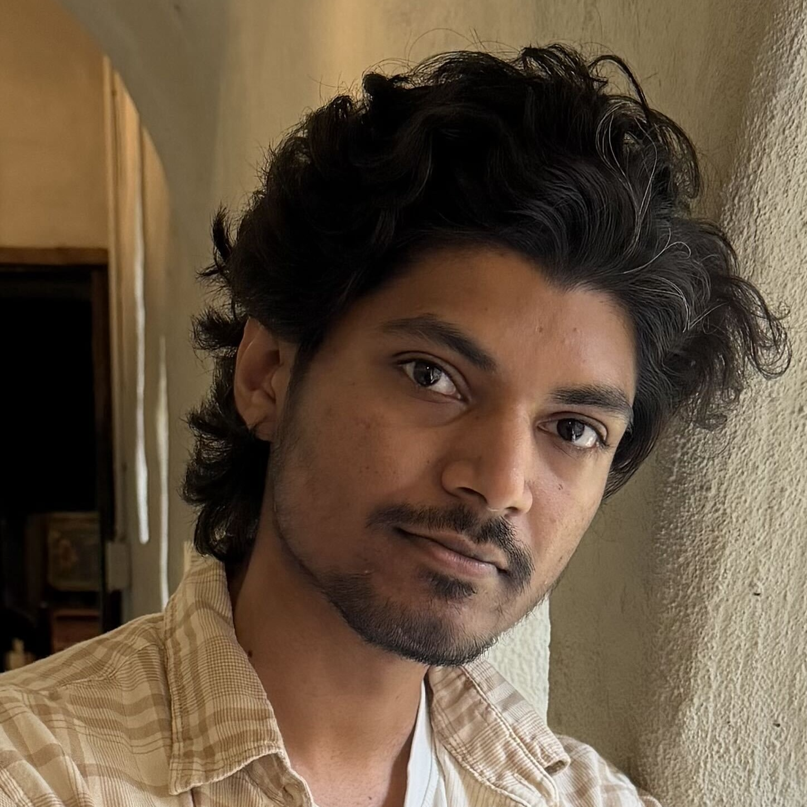
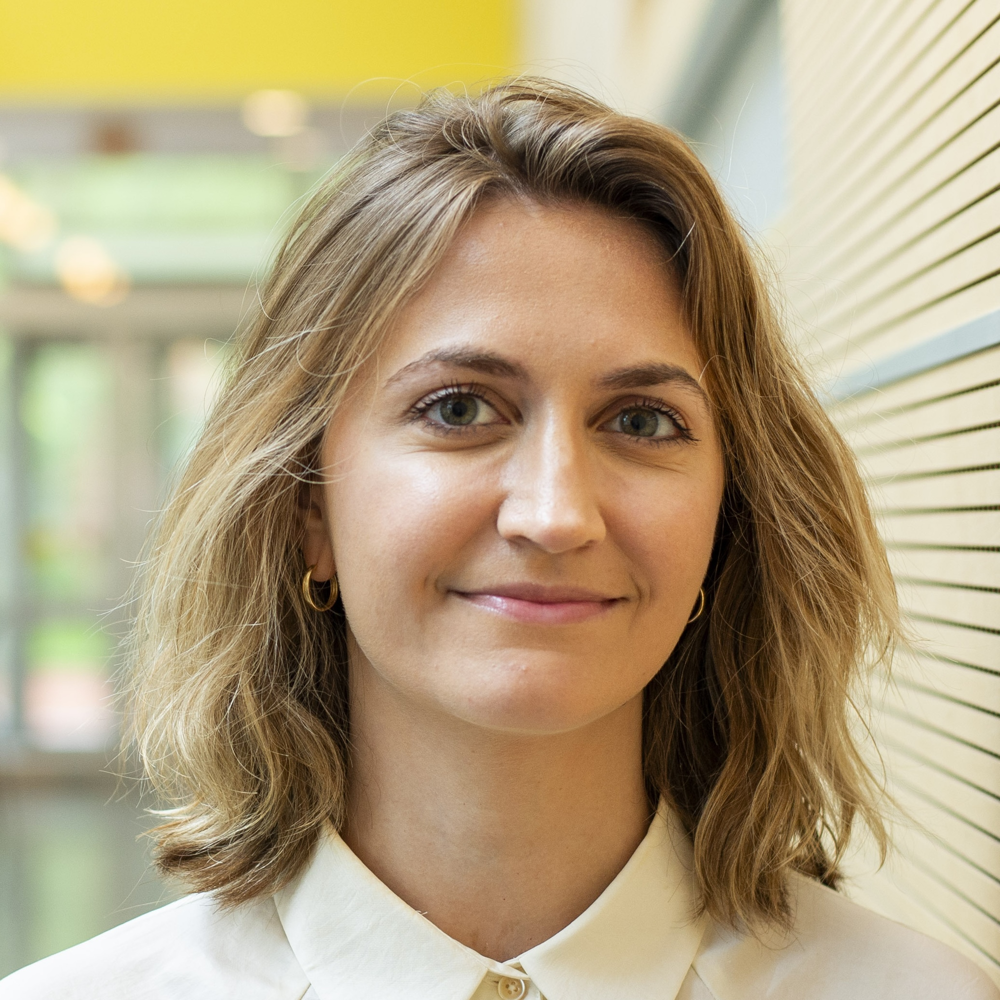
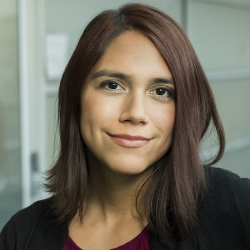
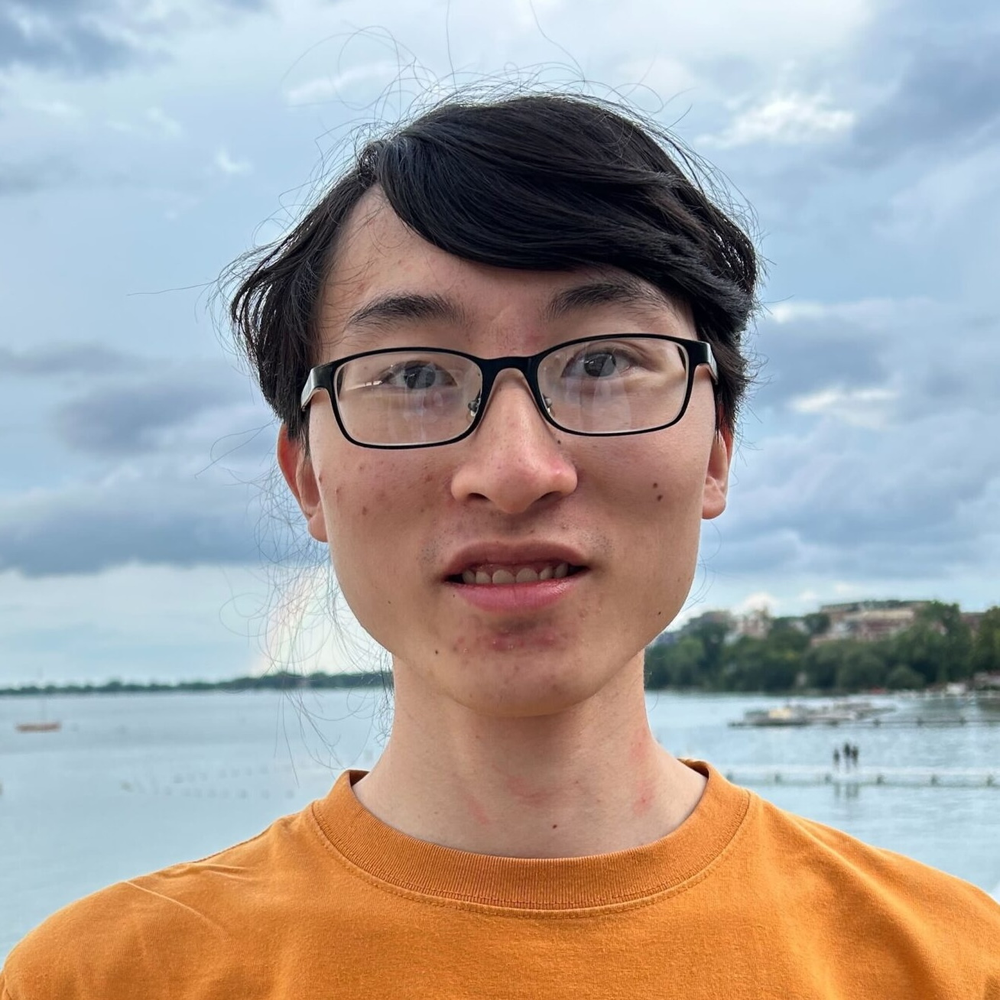

Devon Kohler
Postdoctoral Researcher, Vitek Lab, Northeastern University
Devon is a postdoctoral researcher at Northeastern University’s Khoury College of Computer Sciences in Olga Vitek’s lab. His research interests are in developing computational methods for mass spectrometry (MS)-based proteomics, specifically focused on the application of statistical and causal inference techniques. He is one of the lead developers of the MSstats family of R packages. He is the creator of a number of packages, including MSstatsPTM and MSstatsLiP, as well as the R shiny-based GUI MSstatsShiny. He is currently researching applications of causal inference to biochemical systems, leveraging observational MS-based proteomics data and estimating the effect of perturbations on the downstream system.
Website →

Swaraj Patil
MS Student, Khoury College, Northeastern University
Swaraj is a master’s student in the Khoury College of Computer Sciences, and has been with the Vitek lab since 2025. Swaraj is part of the MSstats development team and his thesis centers on using LLMs to automate formatting and conversion of outputs from unfamiliar tools.
LinkedIn →

Sarah Szvetecz
PhD Student, Vitek Lab, Northeastern University
Sarah is a developer of MSstats and led the development of MSstatsResponse. Her research focuses on developing statistical and machine learning methods for chemoproteomics, with an emphasis on dose-response modeling, drug–protein interaction detection, and characterizing on- and off-target drug effects.
LinkedIn →
Tony Wu
PhD Student, Vitek Lab, Northeastern University
Tony’s research focuses on graph-based algorithms to analyze biomolecular networks, addressing challenges like batch effects and hypothesis generation from proteomics data. He is the lead technical developer of MSstats.
LinkedIn →

Kylie Bemis
Assistant Teaching Professor, Khoury College, Northeastern University
Kylie is Assistant Teaching Professor in the Khoury College of Computer Sciences at Northeastern University. She holds a B.S. degree in Statistics and Mathematics, an M.S. degree in Applied Statistics, and a Ph.D. in Statistics from Purdue University. In 2013, she interned at the Canary Center at Stanford for Cancer Early Detection, where she developed the Cardinal software package for statistical analysis of mass spectrometry imaging experiments. In 2015, she was awarded the John M. Chambers Statistical Software Award by the American Statistical Association for her work on Cardinal. In 2016, she joined the Olga Vitek lab for Statistical Methods for Studies of Biomolecular Systems at Northeastern University as a postdoctoral fellow. In 2019, she joined Northeastern as faculty, where she now teaches data science and develops curriculum for the M.S. in Data Science program. Her research interests include machine learning and large-scale statistical computing for bioinformatics.
Website →
Sai Srikanth Lakkimsetty
PhD Student, Khoury College, Northeastern University
Sai is a doctoral student in the Khoury College of Computer Sciences at Northeastern University. Sai’s research focuses on coregistration approaches of multiple imaging modalities, primarily mass spectrometry imaging, for enabling and improving downstream statistical analyses. Sai’s research interests also include optimization methods involving generative machine learning methods.
LinkedIn →
Ethan Rogers
PhD Student, Vitek Lab, Northeastern University
Ethan’s research focuses on development and evaluation of statistical methods for differential analysis of mass spectrometry experiments with complex designs. He develops workflows for current experiments that showcase best practices and available methods, computational workflows for processing larger-than-memory datasets, and adaptations of geospatial statistical methods for analysis of complex patterns across large multi-sample mass spectrometry imaging experiments.
Website →

Yinyue Zhu
PhD Student, Vitek Lab, Northeastern University
Yinyue’s research focuses on development and evaluation of analysis methods for ion mobility mass spectrometry imaging data. As part of his work he develops novel tools for preprocessing of ion mobility data, including normalization, peak-picking, multi-sample alignment, and analyte identification.